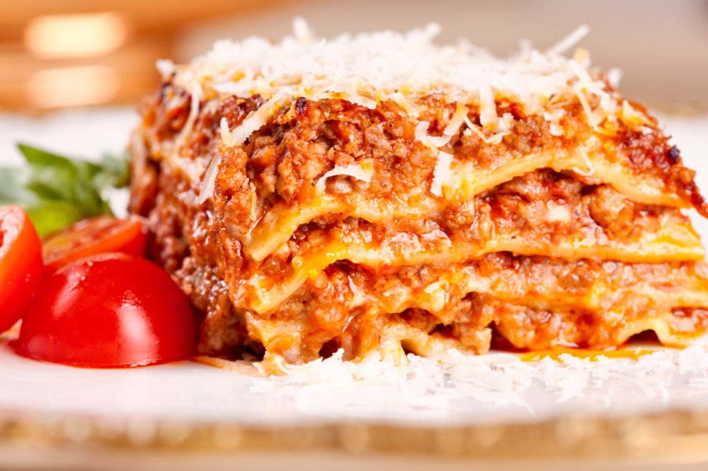

Lasagna

Description
Lasagna is such a great pasta dish. This recipe, adapated from the Flickr link above is a combo of one of the standard lasagna box recipes and f improvisation for the sauce by using jarred sauce instead of making it from scratch. This uses oven-ready, no cook lasagna noodles, which use the moisture from the sauce to cook the pasta. If you make a real meaty sauce, you might want to use precooked lasagna noodles instead.
Homemade lasagna
Ingredients
- 10 Sheets of Lasagna noodles (oven ready)
- 1lb minced meat (ground beef or a mic of beef and pork)
- 1 large jar premade marinara sauce
- 1 container cherry tomatoes
- 16 oz mushrooms
- 2 peppers (any colour, doesn't matter too much)
- 2 T butter
- 1 medium onion, diced finely
- 1 c grated parmesan cheese
- 1 clove of garlic, finely chopped
- Glass of white wine, coffee(both optional)
Bechamel sauce
- 2 cups milk
- 2 T butter
- 2 T flour
- pinch nutmeg
Steps
- In a large skillet, brown the onions in oil [2] along with your garlic.
- Add your meat to the mixture [3] and cook for another 5 minutes.
- Once meat is almost fully cooked, season this mixture to taste with salt and pepper .
- Add 3 tablespoons of freshly brewed coffee [4] and 1 glass of white wine was also added [5]
- Cook until wine has fully evaporated.
- Mix sauce
- Add mushrooms and enough tomato sauce to the jar of sauce make the sauce fairly liquid [6]
- Mix thoroughly [7]
- Add peppers [12] and extra tomatoes [13] to the tomato sauce and mix again.
- Set aside on low heat
- Make the Bechamel sauce in another pot [8].
- In a pot, bring milk to a boil [8]
- In another pot, melt the butter [9]. Add flour and pour in the hot milk. Be sure to whisk immediately so as not to form any clumps of flour.
- When mixture boils, remove from heat and add nutmeg and salt to taste [11].
- Assemble
- Grease the edges of an oven dish
- Line the bottom with a layer of bechamel sauce [14].
- Piece two sheets of lasagne on top. Then add a layer of the meat sauce.
- Add another layer of bechamel sauce, and sprinkle some parmesan cheese on top.
- Repeat for enough layers to fill the oven dish [15].
- Bake in oven for 30 minutes at 350 [16].